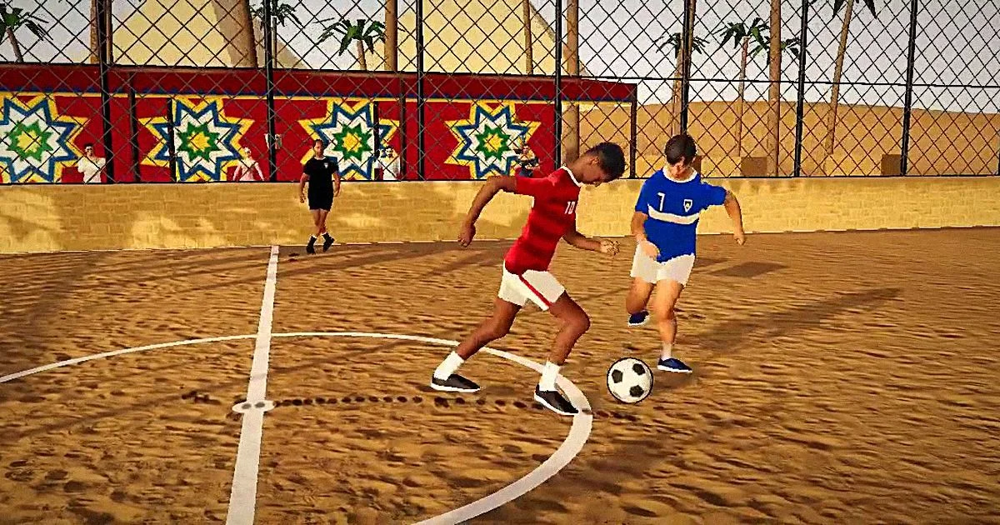
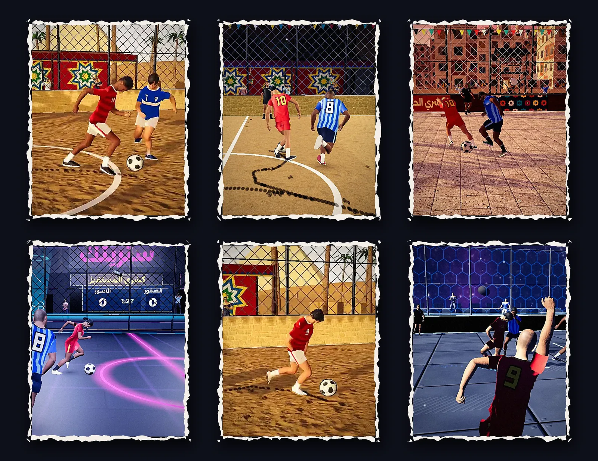
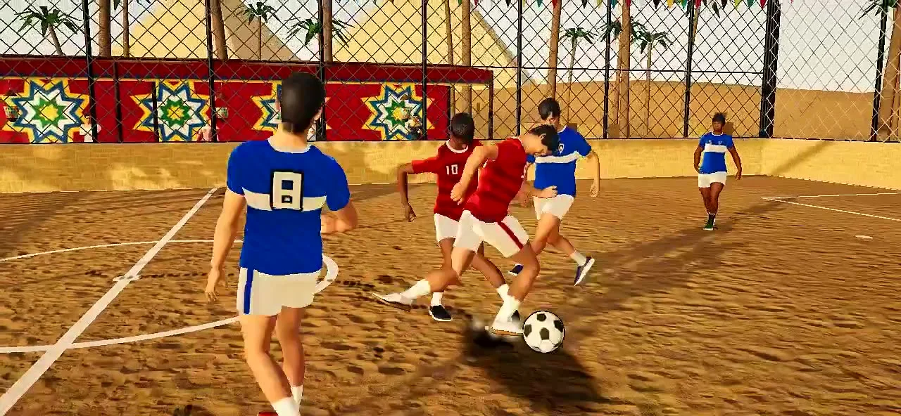
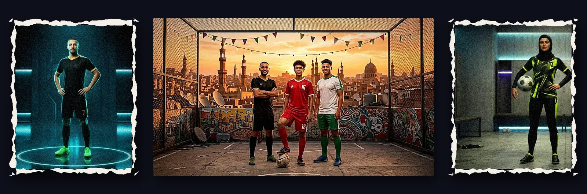

Streetak (ستريتك) is an online, realistic street-football game for mobile, made for Egypt and the Gulf. Each player controls one footballer in 3v3 and 5v5 matches with friends, with bots filling empty slots and AI goalkeepers that read shots, dive and parry. Courts come from the region: by the pyramids, a Cairo alley, a rooftop in the rain, a neon cage and a space arena. Street skills like the khabta power shot and the kobri nutmeg, a full avatar creator for male and female players, and Arabic and English with Egyptian commentary. Under the hood: deterministic predict/rollback netcode at 60 Hz and custom fixed-point ball physics with drag, spin and swept collisions.



